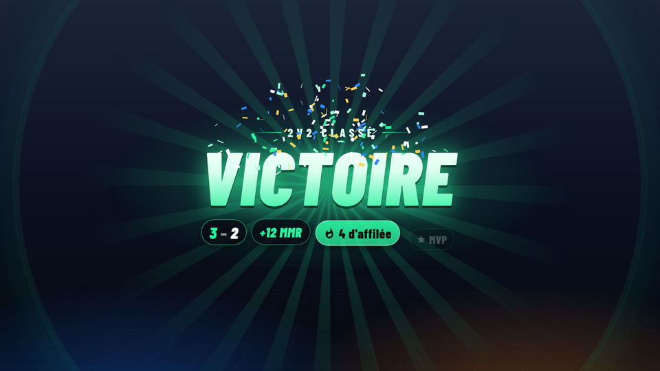
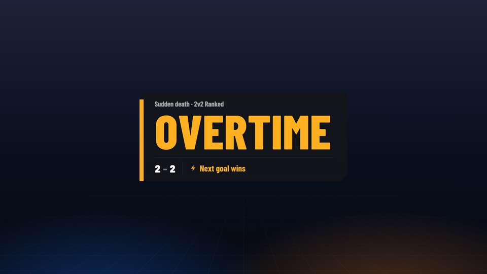
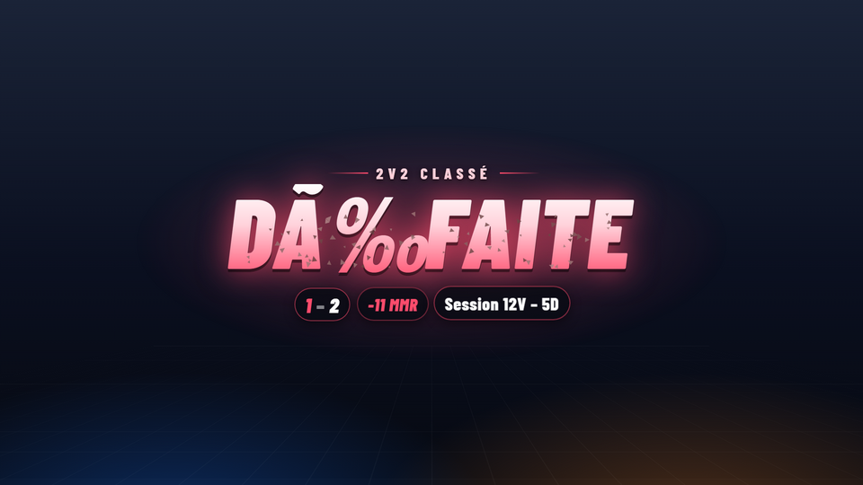
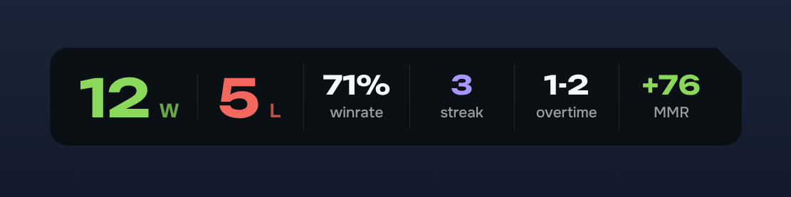
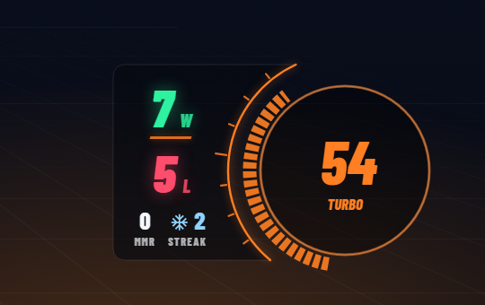
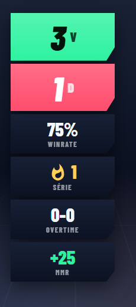
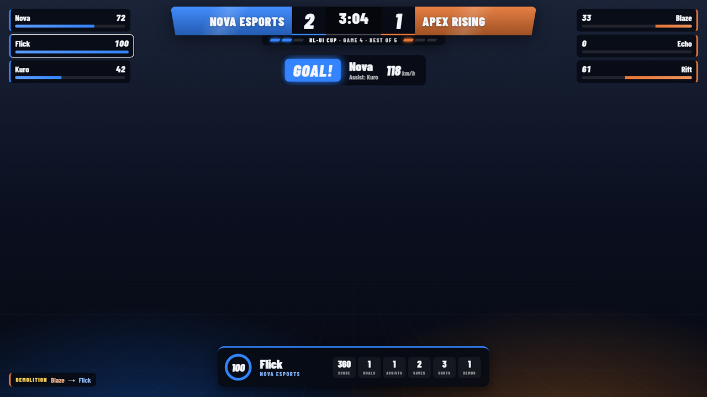
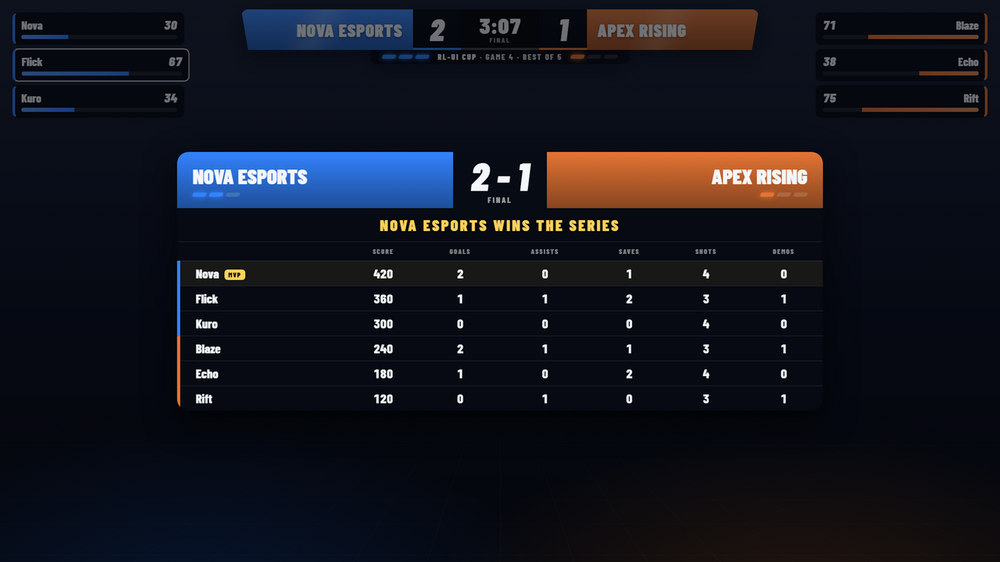

Your Rocket League wins, losses and MMR, live on stream
RL-UI counts every match on its own, reads your real MMR and puts it all in OBS or Streamlabs, with alerts when you win, lose or go to overtime.
Free. Windows 10 or 11, Rocket League on Steam or Epic. No mods, safe with the anti-cheat.

Set it up once, then just play
RL-UI listens to Rocket League's official Stats API and the game's log file. Nothing to click between matches.
Every match counted
W, L and OT detected automatically, plus forfeits, early leaves, MVP and the playlist (2v2 ranked, 3v3…).
Real MMR
Read from the game itself and shown as +9 or −12 after each match, per playlist.
Alerts for the big moments
Victory, defeat, overtime, overtime won or lost and win streaks, with sounds you can replace by your own.
Counter next to the boost gauge
Horizontal, vertical, or snapped to the in-game boost gauge in your team's color.
Twitch chat commands
!wl, !mmr, !last, !streak answered in your chat with live numbers, plus your own commands.
OBS, Streamlabs and Stream Deck
Switch scenes or show sources on overtime and wins, fix the count from a Stream Deck or a hotkey.
Themes
Signature, Minimal, Contrast, or your own images, font, colors and sounds, shared as a .zip.
Updates itself
New versions download in the background. English and French.
Overlays
Browser sources for OBS Studio and Streamlabs Desktop. They follow your settings live, without reloading.





Caster mode
Casting a tournament or a scrim as a spectator? RL-UI gives you a full broadcast overlay: scorebug, Bo3/Bo5/Bo7 series counted automatically, every player's boost, goal banner, statfeed and the end-of-match scoreboard.


Install
About two minutes. A guided setup opens on first launch.
- Download and install
RL-UI-Setupfrom the latest release, or take the portable version. - Play a match. RL-UI connects to Rocket League by itself and recognizes your Steam or Epic account.
- Add the overlays in OBS: Sources, Browser, and paste the address shown in the app, for example
127.0.0.1:5757/overlay/counter.
Questions
Can I get banned for using it?
No mod and no injection: RL-UI only reads the Stats API that Psyonix built into the game for overlays, and the game's local log file. It is compatible with Easy Anti-Cheat.
Windows says the app is unrecognized
The .exe isn't code-signed yet, so SmartScreen may warn on first launch. Click More info, then Run anyway. The source code is on GitHub.
Does it work on Epic Games and Steam?
Yes, both. Your account is recognized from the game log, in solo, duos and trios.
Where does the MMR come from?
From Rocket League's own log on your PC. Right after a match RL-UI shows an estimate, then corrects it with the real value as soon as the game reports it.
Does it send my data anywhere?
No. Everything stays on your PC. The only connections are the update check on GitHub and the Twitch chat if you turn it on. Passwords are encrypted with Windows data protection.
Is it free?
Yes.